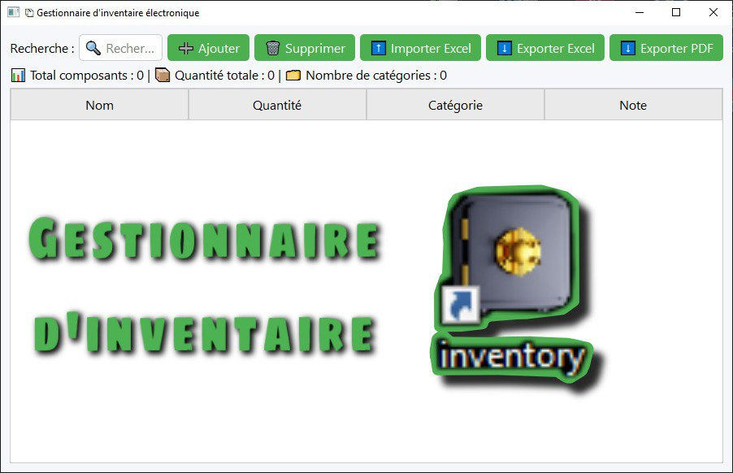
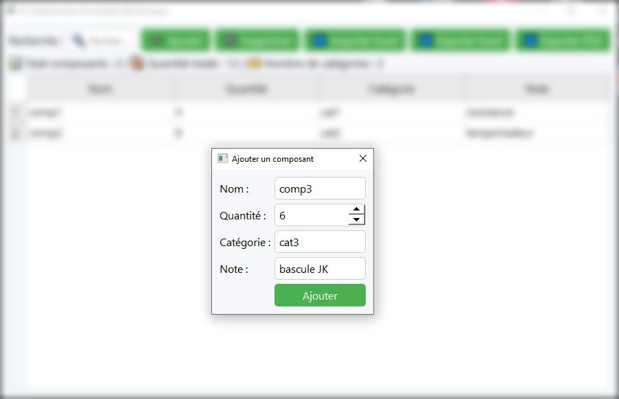
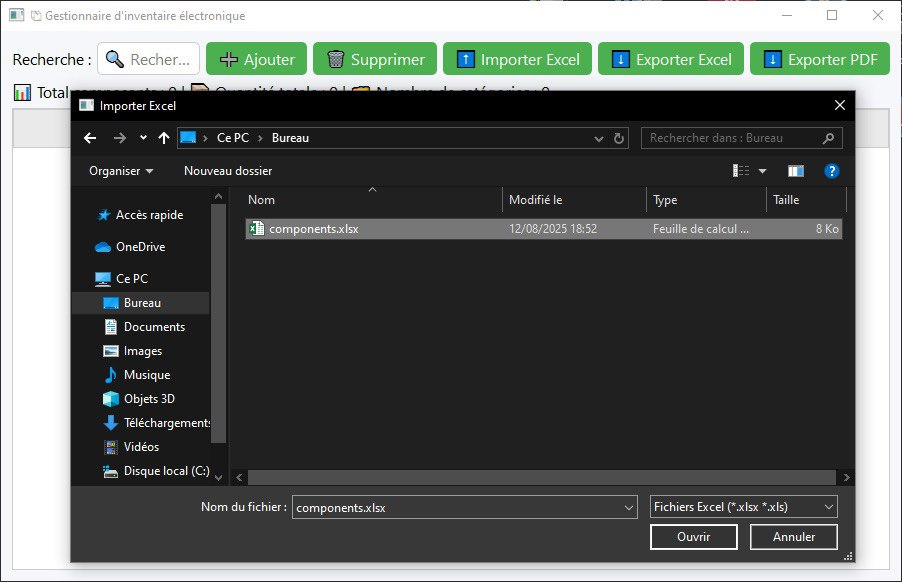
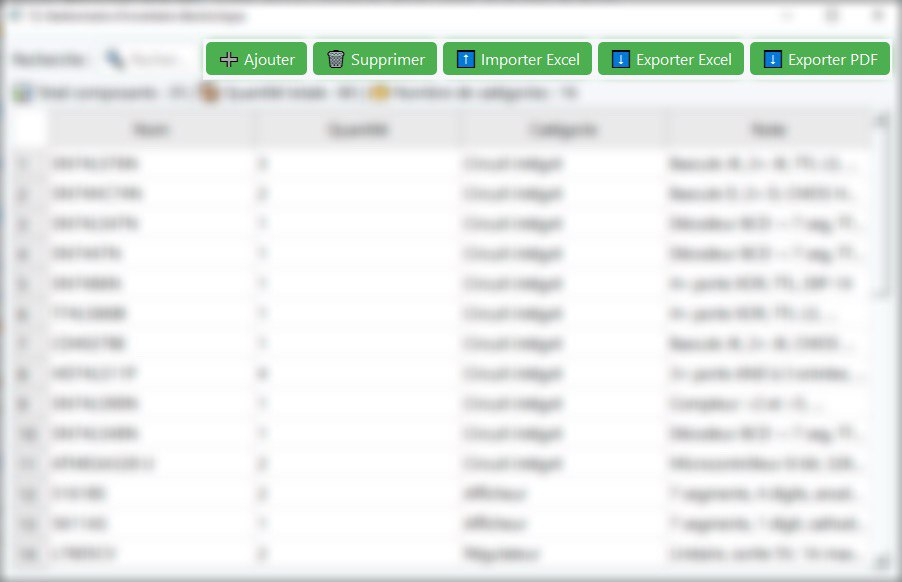
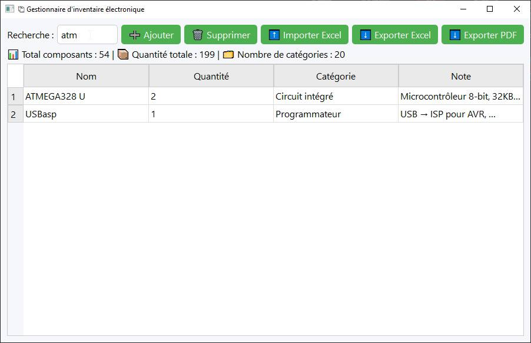

Présentation
Ce projet est né d’un besoin personnel : organiser et suivre mes composants électroniques
de manière efficace. J’ai conçu et développé moi-même cette application en Python
avec PySide6 (Qt for Python), en intégrant des fonctionnalités dignes
d’un outil professionnel pour gérer un inventaire complet.
Échelle du projet : Application complète avec sauvegarde des données,
import/export, recherche avancée, statistiques en temps réel et génération de rapports professionnels.

Interface principale – claire, moderne et facile à utiliser

Formulaire d'ajoute – simple et rapide

Import Excel – chargement massif de données existantes

Export PDF / Excel – rapport professionnel

Recherche intelligente – Cherche dans toutes les colonnes.
Fonctionnalités principales
- ➕ Ajouter des composants – Formulaire pour saisir nom, quantité, catégorie et notes.
- ➖ Supprimer des composants – Retirer facilement les éléments obsolètes ou inutiles.
- ⬆ Importer depuis un fichier Excel – Charger un inventaire complet depuis un tableur.
- ⬇ Exporter en Excel ou PDF – Générer des rapports professionnels pour archivage ou partage.
- 🔍 Recherche avancée – Système de recherche qui parcourt toute la table pour trouver un composant rapidement.
- ↕ Tri intelligent – Classer par nom, quantité, catégorie ou note.
- 📊 Statistiques globales – Affiche nombre total de composants, catégories et quantité totale.
- 💾 Sauvegarde automatique – Les données sont enregistrées et restaurées automatiquement.
- 🎨 Interface moderne – Design clair, ergonomique et agréable à utiliser.
Technologies utilisées
Python 3
PySide6 (Qt for Python)
Pandas
ReportLab
JSON
Excel (Import/Export)
Détails techniques
- Utilisation de QTableWidget pour un affichage dynamique et triable.
- Boîtes de dialogue personnalisées avec validation des champs.
- Export PDF avec ReportLab pour gérer les inventaires volumineux.
- Lecture/écriture Excel via Pandas pour une compatibilité maximale.
- Sauvegarde des données en JSON dans le dossier utilisateur.
- Compatible PyInstaller pour création d’exécutables autonomes.
Cas d'utilisation
- Gestion personnelle de mes propres composants électroniques.
- Passionnés suivant leur collection de composants.
- Laboratoires éducatifs organisant leur matériel pédagogique.
- Petites équipes de production maintenant leur stock projet.